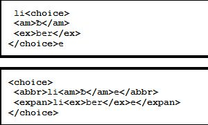

2. Eléments pour la transcription des sources primaires
2.1. Introduction
Mettre à disposition du plus grand nombre de chercheurs ou curieux des sources primaires comme des matériaux d’étude, donc de manière fidèle tout en les rendant compréhensibles, est bien évidemment très souvent le principal enjeu d’un travail d’édition savante de documents manuscrits.
Dans tous les cas, quelles que soient les modalités de diffusion de l’édition (imprimé, électronique...) la transcription est la première étape du travail d’édition.
Ce travail s’appuiera sur des règles éditoriales qui seront explicitées, et qui seront elles-mêmes fondées sur des recommandations admises dans la discipline scientifique concernée.
L’éditeur scientifique ne s’arrêtera pas là : il lui faudra mettre en place un paratexte adapté aux besoins du projet. Ainsi, dans la plupart des cas, il voudra expliquer certains termes, donner les informations utiles pour identifier un lieu, une personne, etc. Il s’agira alors d’ajouter des notes explicatives ou historiques. Dans de nombreux cas également (édition de documents d’archives), il ajoutera avant le texte une analyse et des éléments de datation temporelle et géographique, une description physique du manuscrit. Si le texte fait partie d’un corpus, il lui attribuera un numéro d’ordre ou un identifiant, voire un titre éditorial. Il cherchera également probablement à indexer le texte, soit en exprimant de manière plus formelle des informations paratextuelles (type de document, auteur de l’acte...), soit en relevant au sein même du texte transcrit des termes ou noms propres significatifs.
Dans certains cas plus complexes, il s’agira de chercher à établir le texte à partir de plusieurs témoins de sa tradition. On ajoutera à la transcription un stemma ou tableau de la tradition, et des notes d’apparat critique permettront de rapporter au témoin choisi comme la référence les leçons des autres témoins.
Dans le cas d’une édition électronique, les travaux peuvent aller encore plus loin ; en fonction des besoins et des textes étudiés, on pourra par exemple établir et aligner au texte une traduction, identifier les parties du discours écrit, définir un glossaire lexicographique...
Si on veut encoder correctement la transcription et tout ce qu’on lui ajoute pour rendre compréhensible et exploitable le texte, qu’on le fasse directement en TEI ou qu’on passe par une étape intermédiaire, on devra choisir les éléments et attributs TEI adaptés (le modèle d’encodage choisi doit respecter et exprimer sans ambiguité les règles éditoriales).
On va dans un premier temps s’intéresser à ce que la TEI propose pour établir la transcription.
2.2. Quelles caractéristiques d’une source primaire pourrait-on vouloir exprimer dans un travail de transcription ?
Voici une petite liste non exhaustive pour répondre à cette question :
- la structure logique du texte ;
- la manière dont le texte est inscrit sur la page ;
- les abréviations ;
- les ajouts et suppressions ;
- les erreurs syntaxiques ;
- les graphies de l’époque et leur équivalent actuel ;
- le rendu formel original (s’il a une importance)
- la ponctuation originale, ou encore les caractères originaux ;
- le cas échéant, les illustrations, dessins ou graphiques illustrant le texte ;
- peut-être d’autres choses, selon le point de vue qu’on adopte et les objectifs du projet...
Pour cette étape du travail d'édition, on aura besoin d'éléments du module core et du module transcr, qui s'est beaucoup enrichi récemment.
2.3. Structure logique et mise en page du texte
Par structure, on entend l’organisation du texte en parties constituantes, par mise en page la manière dont le texte est inscrit, réparti, sur le support.
Le texte étudié et l’objet physique sur lequel ce texte est inscrit ont des structures hiérarchiques distinctes, qu’il faut toutes les deux encoder dans l’idéal. En effet l’incarnation matérielle du témoin étudié donne du sens, ou encore elle peut être étudiée en tant que telle.
Il faut noter cependant que dans l’univers TEI, le texte est avant tout considéré comme une abstraction, de ce fait c’est sa structure logique qui prime, et à laquelle on va en général rapporter les informations relatives à la structure physique.
La plupart du temps, quel que soit le type de texte à encoder, il sera encodé au sein de balises <div> (division de texte) emboîtées.
2.3.1. Encodage de la structure logique (prose)
- <div> sert à marquer les divisions les plus importantes ; saisir une valeur dans l’attribut type pour consigner la nature de la division, "chapitre", "section", etc.
- <floatingText> sert à baliser un texte qui interrompt le texte le contenant à n’importe quel endroit ;
- au sein de <div>, une unité de sens est encodée au moyen de <p> (paragraphe)
- <list>, <table> et <figure> sont utiles pour encoder les listes, les tableaux et les illustrations
- des éléments plus spécialisés existent pour encoder des sections génériques (<head>...) ou propres à certains types de texte : <opener>, <salute>, <trailer> pour la correspondance, <titlePage> pour une page de titre ; <argument> pour les principaux sujets du discours s’ils sont donnés au début du texte...
- pour les pièces de théâtre, on pourra trouver des dialogues divisés en énoncés (<sp>), contenant un mélange de <p> ou de <l> facultativement entrecoupés de didascalies (<stage>)
- des segments de texte plus petits que des paragraphes peuvent aussi être distingués, à l’aide d’éléments tels que <s> (phrase) ou <seg> (segment)
- les citations incluses dans le texte peuvent être isolées au moyen des éléments <quote> ou <cit> (ce dernier, lorsque l’auteur fournit aussi la source du texte cité).
Voici quelques exemples illustrant certains de ces points (extraits simplifiés de l’édition du journal de prison de Henri Delescluze - AN 494AP/1, http://elec.enc.sorbonne.fr/delescluze/).
2.3.2. Encodage de la structure logique (vers)
- on dispose de <l> (pour "line" : ligne de vers) et <lg> (pour "line group" : groupe de lignes fonctionnant comme une unité formelle)
- l’attribut typesera là aussi utilisé pour identifier le type d’unité formelle, comme "strophe", "couplet".
- lignes et groupes de lignes peuvent aussi être numérotés en utilisant les attributs n et xml:id.
Exemple : un poème de Charles Baudelaire.
2.3.3. Encodage de la "structure physique"
Pour exprimer la manière dont le texte est inscrit sur le support physique, des éléments vides de type ‘milestone’ (borne) sont disponibles, <gb>, <pb>, <cb> et <lb>, qui correspondent respectivement à la désignation des fins de cahier, page, colonne et ligne. On peut aussi numéroter et identifier ces éléments, au moyen des attributs n et xml:id.
Exemple :  Source : THELEME (techniques pour l’historien en ligne), dossier n°99.
Source : THELEME (techniques pour l’historien en ligne), dossier n°99.
2.3.4. Mise en page
L’élément <hi> est utile si l’on veut spécifier qu’un segment du texte initial est mis en valeur graphiquement ("highlighted") d’une certaine manière dans la source (par ex. écrit en plus grosses lettres, décoré, souligné...). L’attribut rend permet de spécifier de quel effet graphique il s’agit.
L’élément <fw> (forme work, ou élément de mise en page) permet d’encoder un titre courant (en haut ou en bas de la page), une réclame, un numéro de folio ou une autre information comparable, qui apparaît sur la page courante.
Femmes de Claude Simon, édition du manuscrit 1.
2.4. Les abréviations
Les abréviations sont très caractéristiques des manuscrits de toutes sortes. L’usage est de distinguer plusieurs types d’abréviations.
- Abréviations par suspension
- la ou les premières lettres du mot sont écrites, suivies en général d’un point ou d’une autre marque : par exemple e.g. pour exempli gratia.
- Abréviations par contraction
- les première(s) et dernière(s) lettres du mot sont écrites, accompagnées le plus souvent d’un signe abréviatif tel que trait suscrit, ou, plus rarement, un point : par exemple Mr. pour Monsieur. Des lettres suscrites (voyelles ou consonnes) sont également souvent utilisées pour indiquer qu’on a procédé à des contractions, elles-mêmes de divers types : par exemple s suivi de r suscrit pour sieur.
- "Brévigraphes"
- ce sont des symboles spécifiques, tels que la note tironienne utilisée à la place de la conjonction de coordination ‘et’, ou la lettre p barrée , souvent utilisée à la place de la syllabe per.
2.4.1. Les abréviations et leur résolution
Une abréviation peut être restituée de deux manières :
- on peut choisir de consigner l’abréviation non développée, en la transcrivant simplement comme une séquence spécifique de lettres ou de symboles sur la page : par exemple, un ‘p avec une barre au travers du jambage’ ou un ‘a avec un macron’
- on peut aussi interpréter ou développer l’abréviation, en remplaçant la ou les lettres par leur signification : par exemple, ‘per’, ‘an’
La TEI permet de fournir à la fois les formes abrégées et développées des abréviations.
2.4.2. Encoder les abréviations
Auparavant, on se servait pour encoder les abréviations, d’éléments TEI génériques tels que <hi> et <supplied>, hors de leur périmètre normal d’utilisation.
Aujourd’hui, la TEI propose des éléments spécifiques permettant de choisir entre deux niveaux d’encodage :
- la totalité d’un mot abrégé et la totalité de sa forme développée peuvent être encodés au moyen des éléments <abbr> et <expan>
- le symbole utilisé pour indiquer la suppression d’une ou plusieurs lettres, et les lettres substituées à ce symbole lorsqu’on résoud l’abréviation, peuvent être respectivement encodés au moyen des éléments <am> et <ex>
On peut utiliser tous ces éléments conjointement.
Voici un exemple. L’image ci-après montre un petit extrait d’une charte de la fin du XIIe siècle dans laquelle ont été utilisées de nombreuses abréviations : . On s’intéresse ici au mot latin libere (librement), qui est écrit en utilisant un brévigraphe voulant ici dire "ber", le b avec un tilde.
Selon la stratégie éditoriale, on peut encoder cette inscription de l’une ou l’autre des manières ci-après (on dispose du caractère Unicode utile) : 
2.4.3. Utilisation de <choice>
Toutes ces paires d’éléments peuvent être englobées dans un élément <choice> : 
2.4.4. Catégoriser les abréviations
L’inscription encodée ci-dessus pourra, par exemple, être affichée comme suit : ‘li(ber)e’
Comme pour d’autres éléments, les attributs resp et cert peuvent aussi être utilisés pour indiquer qui est responsable de la forme développée, et le degré de certitude de cette interprétation.
2.5. Encodage de la langue du texte
Il peut être important de noter la langue du texte ou la langue d’une portion de texte, à l’aide de l’attribut xml:lang qui est disponible pour la plupart des éléments TEI.
L’élément <foreign> peut être employé si un mot ou une expression figurent dans le texte, que leur langue diffère de la langue du texte et qu’aucun autre élément plus spécifique n’est déjà utilisé pour ce mot ou cette expression.
{kind=link}
2.6. Encodage des erreurs syntaxiques ou des segments sémantiquement incorrects
2.7. Encodage des graphies anciennes et de leur forme normalisée
Les sources primaires utilisent rarement l’orthographe moderne. Pour la recherche ou pour d’autres raisons liées aux traitements informatiques prévus, la graphie moderne peut s’avérer utile dans une transcription. L’élément <reg> (regularized, en français régularisation) est disponible pour encoder une forme normalisée, tandis que l’élément <orig> (forme originale) contient la graphie d’origine non normalisée. On peut si on le souhaite regrouper ces éléments de contenu alternatif en utilisant l’élément <choice>.
Exemple (extrait simplifié de l’édition du journal de prison de H. Delescluze):
2.8. Ajouts, suppressions et substitutions
2.8.1. <add> et <del>
Les changements opérés sur le texte inscrit, qu’ils soient faits par le scripteur ou ultérieurement par une autre main, peuvent être encodés au moyen des éléments <add> (ajout) ou <del> (suppression).
- <add> contient des lettres, des mots ou des phrases insérées dans le texte par un auteur, un copiste, un annotateur ou un correcteur.
- <del>contient une lettre, un mot ou un passage supprimé, marqué comme supprimé, sinon indiqué comme superflu ou erroné dans le texte par un auteur, un copiste, un annotateur ou un correcteur.
Exemple (extrait simplifié de l’édition d’une charte italienne du XIIe siècle) :
2.8.2. <addSpan> et <delSpan>
Ces deux éléments délimitent une section de texte au moyen de pointeurs plutôt qu’en encadrant la section de texte. Ils sont utiles si un ajout ou une suppression chevauche une autre portion de texte, ou encore si la séquence de texte ajoutée est suffisamment longue pour avoir sa propre structure.
L’attribut spanTo indique où se situe la fin d’une portion de texte commençant par l’élément qui porte l’attribut.
2.8.3. Substitutions
Les ajouts et suppressions sont parfois considérés comme une seule opération de substitution ; voici quelques scénarios possibles :
- un mot ou une lettre écrit par-dessus un(e) autre
- un mot ou une lettre supprimé, remplacé par un(e) autre écrit au-dessus par la même main lors de la rédaction du texte
- un mot ou une lettre supprimé, remplacé par une main différente à un autre moment
- une longue série de substitutions portant sur un segment de texte, l’ordre des substitutions pouvant être incertain, ainsi que le choix de la leçon à préférer
. Dans de tels cas, les éléments <add> et <del> peuvent être groupés au moyen de l’élément <subst> (substitution).
Exemples


En l’absence d’indication, la suppression précède l’ajout, mais l’attribut seq peut être utilisé pour spécifier dans quel ordre les interventions ont eu lieu.
2.9. Marquage du processus d'écriture
L'élément générique <mod> indique toute modification identifiée au sein d'un document, sans présupposé sur la fonction de cette modification. Il peut être utile lorsqu'on souhaite spécifier ce que l'on voit sur un manuscrit, plutôt qu'une interprétation de l'éditeur.
L’élément <restore> indique une intervention qui conduit au retour du texte à un état antérieur, par annulation d’une opération ou instruction de l’éditeur ou de l’auteur.
Depuis peu il existe aussi en TEI des éléments pour marquer des opérations de réécriture (<retrace>), de rétablissement (<undo>) ou de confirmation d'annulation (cf. Guidelines TEI, file:///C:/Fichiers/TEI/tei-2.6.0/doc/tei-p5-doc/en/html/PH.html#undo
Enfin, récemment également, ont été ajoutés à TEI des éléments pour indiquer les opérations de transposition (voir file:///C:/Fichiers/TEI/tei-2.6.0/doc/tei-p5-doc/en/html/PH.html#transpo. Ne pas oublier l'élément <metamark> qui contient ou décrit tout type de signe graphique ou de lettre dont la fonction est de spécifier comment le document doit être lu, et qui ne fait donc pas partie du contenu même de ce document.

2.10. Restitutions de portions de texte dans la transcription
Lorsqu’un mot est restitué par l’éditeur, on peut utiliser l’élément <supplied>.
les attributs resp and cert pourront être employés ici comme ailleurs. Un attribut source est également disponible pour indiquer qu’on se fie à un autre témoin du texte pour proposer une restitution :
Exemple (extrait de l’édition du cartulaire blanc de Saint-Denis, chapitre de Beaurain, acte 2.
2.11. L’élément <gap> (texte manquant ou non transcrit)
L’élément <gap> peut aussi être utilisé lorsque le segment de texte, bien présent et lisible, est omis dans la transcription, que ce soit pour des raisons éditoriales ou parce qu’on a sélectionné les sections de texte à transcrire.
2.12. Marquage des dommages matériels et difficultés de lecture
Utiliser l’élément <unclear> si le texte est devenu partiellement illisible, par exemple par suite de suppression ou dommages matériels, de sorte qu’il peut être lu mais sans certitude.
Utiliser l’attribut reason pour déclarer la cause de l’incertitude dans la transcription et l’attribut cert pour donner une idée de la confiance que l’on peut avoir dans la transcription.
Exemple (édition des carnets de prison de Delescluze ; carnet 1, page 11, 6 avril 1852)
L’élément <damage> est à utiliser pour indiquer les zones du document sur lesquelles des dommages matériels affectent le texte, mais où l’on peut lire au moins une partie du texte avec certitude. Les attributs agent et extent précisent respectivement la cause et l’étendue des dommages.
2.13. Encodage des informations sur les mains et sur leurs interventions dans le manuscrit
2.13.1. Pour décrire les mains : <handNote>
L’élément <handNote> (note sur une main) est utilisé pour fournir des informations sur chacune des mains qui sont reconnues dans le document édité.
- Quand le module 'transcr' est utilisé, l’élément <handNotes> est disponible au sein de l’élément <profileDesc> de l’en-tête TEI, pour contenir un ou plusieurs éléments <handNote>. (méthode simple)
- Quand le module 'msdescription' est utilisé, l’élément <handDesc> devient également disponible comme une partie de la description structurée d’un manuscrit.
Il est possible d’utiliser ensemble les deux éléments si, par exemple, l’élément <handDesc> contient un résumé unique décrivant toutes les mains successivement, pendant que l’élément <handNotes> décrit les particularités de chacune des mains.
2.13.2. Pour indiquer un changement de main : <handShift>
<handShift> (reprise de main) marque le début d’une section du texte écrite par une nouvelle main ou le début d’une nouvelle séance d’écriture.
Quelques exemples :
2.13.3. Utilisation de l’attribut hand
L’attribut hand est utilisé pour spécifier qu’un segment de texte (division, paragraphe, ou segment plus petit) est écrit par une main donnée. Il contient un pointeur vers la description de la main concernée. Exemple :
2.14. Encodage "des images" et "du document" (éléments <facsimile> et <sourceDoc>)
Il est possible, grâce à l'élément <facsimile>, placé entre <teiHeader> et <text>, de déclarer une liste d'images numériques de la source primaire éditée. Les éléments <graphic> peuvent par ailleurs être encodés au sein d'éléments <surface>, qui définissent, grâce à un eystème de coordonnées, des surfaces de référence. Les surfaces peuvent être subdivisées en <zone>. Une fois ces différents éléments dotés d'attribut xml:id, on peut, depuis le texte édité, faire référence à une image ou à une zone donnée via l'attribut facs.
Depuis 2012, la TEI P5 a évolué pour permettre un encodage du document à l'aide de l'élément <sourceDoc>, également disponible à la suite de <teiHeader> dans <TEI>. Dans <sourceDoc>, on pourra également définir des zones de l'image numérique, dans lesquelles on transcrirra des lignes (<li>) de texte, et on pourra se servir des éléments de transcription pour y baliser les phénomènes observés (à l'exclusion de tout balisage interprétatif tel qu'encodage des noms propres).